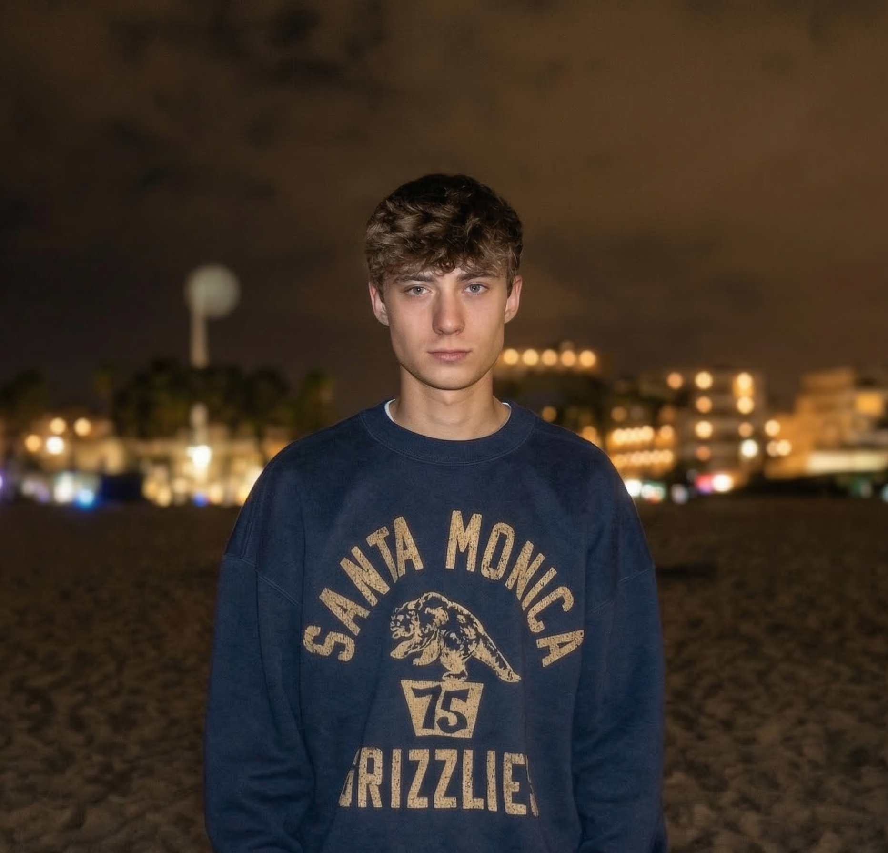

Renzo
Mertens
Ik ben een gemotiveerde student programmeren aan Thomas More. Ik werk graag strak en professioneel, maar wel met een creatieve blik.
Ik hou ervan om me vast te bijten in een lastig probleem en pas te stoppen als de code echt goed werkt. Soms ben ik wat ongeduldig als het niet meteen lukt, maar dat zorgt er juist voor dat ik extra hard doorwerk om een oplossing te vinden.
Op deze website zie je mijn achtergrond, mijn ervaringen als student en wie ik ben buiten mijn studies.